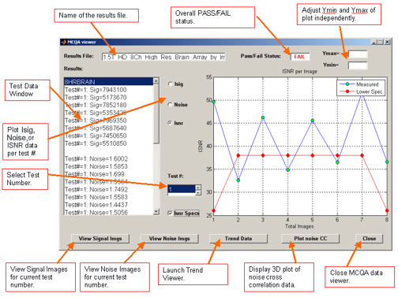

MCQA Result Viewing and Troubleshooting
1 Viewing Report Results
-
After running the , select View Report Details to review the results.
The MCQA Viewer is displayed. The Results File and Pass/Fail Status are listed across the top of the viewer. The test results display in the Results window on the left side of the viewer.
Figure 1. MCQA Viewer

-
To review past results, select File > Open Results File, and select the desired coil results file.
-
To review the results of a different test for this same coil, select the appropriate number from the Test # scroll box.
-
To graph the data, select Isig, Noise, or Isnr.
The corresponding results are displayed in the window to the right. The integrated signal, noise, or integrated SNR values are listed on the vertical axis with the images along the horizontal axis.
-
To graph the ISNR specification values in addition to the data, select the Isnr Specs box.
The graph results are automatically scaled according to the data values. To manually change the vertical scale, enter the value in the Ymax and/or Ymin fields at the top right.
-
To view all the signal or noise images, select View Signal Imgs or View Noise Imgs.
An image viewer appears with one image per coil element, ordered left-to-right and top-to-bottom.
Figure 2. Example of Signal and Noise Images

-
In the MCQA Viewer, select Plot noise CC to display a 3D plot of the noise cross-correlation data for the results being viewed.
The data shows the relative cross correlation of noise between receiver channels. Green data is a one-to-one correlation; red data are correlations above the threshold.
note:There are currently no specs for the noise cross-correlation data. It may be possible to determine patterns per coils and set specs as more data is collected.
Figure 3. Signal and Noise Images

-
Past MCQA results are stored on the system, to allow for trending of ISNR data over time. In the MCQA Viewer, select Trend Data.
Figure 4. MCQA Trend Viewer

2 MCQA Trend Viewer
Every time an MCQA test is completed, a new results file is generated. These results can be graphically trended within the MCQA Trend Viewer. All the results files available for trending are listed in the window to the left.
-
Select the Test # and Image # of the desired data for review.
-
Choose Isig, Noise, or Isnr (corresponding to the desired graph).
-
The data is displayed over time (number of tests run). To change the vertical scale, enter new values in the Ymax and/or Ymin fields.
Statistics pertaining to the existing data are shown in the lower left.